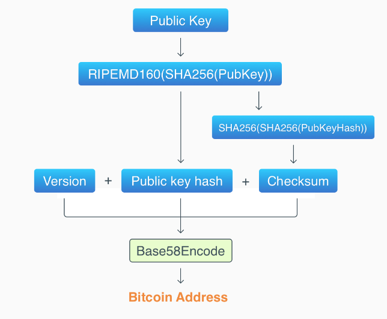

func NewMerkleTree(data [][]byte) *MerkleTree //生成Merkle树
func NewMerkleNode(left, right *MerkleNode, data []byte) *MerkleNode // 生成Merkle树节点
func (t *MerkleTree) SPVproof(index int) ([][]byte, error) //提供SPV path
func (t *MerkleTree) VerifyProof(index int, path [][]byte) (bool, error) //验证SPV路径
func (t *Transaction) IsCoinBase() bool //coinbase交易判断
func (w *Wallet) GetAddress() []byte //获取公钥对应的地址
func (out *TXOutput) Lock(address []byte) //设置锁定脚本PubkeyHash部分
Merkle树部分
构建结点：
需要分两种情况，第一种是左右节点都是空，这类就是最底层的对transcation进行hash操作，作为最底层的结点存在。第二种是左右都有子结点，这种就是更高层的结点，需要把左右hash合并，并且再hash一次。
ret := new(MerkleNode)
if left == nil && right == nil {
shaVal := sha256.Sum256(data)
ret.Data = shaVal[:]
return ret
} else {
ret.Left = left
ret.Right = right
shaVal := sha256.Sum256(append(left.Data, right.Data...))
ret.Data = shaVal[:]
return ret
}
建树
需要对结点数为0和1做特判。
为0则返回nil
为1则返回一个node，但是要封装在root中
其他则正常处理，在奇数个结点则复制一份，偶数个则直接聚合
if len(data) == 0 {
return nil
}
if len(data) == 1 {
sigNode := NewMerkleNode(nil, nil, data[0])
ret := new(MerkleTree)
ret.Leaf = data
ret.RootNode = sigNode
return ret
} else {
var nodes []*MerkleNode
for _, eachTrade := range data {
//eachHash := sha256.Sum256(eachTrade)
nodes = append(nodes, NewMerkleNode(nil, nil, eachTrade))
}
for len(nodes) > 1 {
if len(nodes)%2 != 0 {
nodes = append(nodes, nodes[len(nodes)-1])
}
var level []*MerkleNode
for i := 0; i < len(nodes); i += 2 {
level = append(level, NewMerkleNode(nodes[i], nodes[i+1], nil))
}
nodes = level
}
ret := new(MerkleTree)
ret.RootNode = nodes[0]
ret.Leaf = data
return ret
}
生成spv验证路径
相当于重新构建一棵树，而且要自底向上把一个结点相对的结点存入到路径
if index > len(t.Leaf) {
return nil, errors.ErrKeyIncorrect
}
var proofPath [][]byte
var hashes [][]byte
for _, leaf := range t.Leaf {
hashVal := sha256.Sum256(leaf)
hashes = append(hashes, hashVal[:])
}
for len(hashes) > 1 {
if len(hashes)%2 != 0 {
hashes = append(hashes, hashes[len(hashes)-1])
}
if index%2 != 0 {
proofPath = append(proofPath, hashes[index-1])
} else {
proofPath = append(proofPath, hashes[index+1])
}
index = index / 2
var level [][]byte
for i := 0; i < len(hashes); i += 2 {
hashVal := sha256.Sum256(bytes.Join([][]byte{hashes[i], hashes[i+1]}, []byte{}))
level = append(level, hashVal[:])
}
hashes = level
}
return proofPath, nil
验证
把某片要验证的叶子做hash，之后根据index选择放在左边还是右边，index为偶数放在左边，index为奇数放在右边
最后和root的hash比较
Leaf := sha256.Sum256(t.Leaf[index])
hashLeaf := Leaf[:]
for _, eachHash := range path {
if index%2 == 0 {
hashVal := sha256.Sum256(bytes.Join([][]byte{hashLeaf, eachHash}, []byte{}))
hashLeaf = hashVal[:]
} else {
hashVal := sha256.Sum256(bytes.Join([][]byte{eachHash, hashLeaf}, []byte{}))
hashLeaf = hashVal[:]
}
index = index / 2
}
for i := 0; i < 32; i++ {
if t.RootNode.Data[i] != hashLeaf[i] {
return false, nil
}
}
return true, nil
transaction部分
如文档所提及的
在我们的设计中，coinbase交易中对应的输入中Txid 为空，Vout对应为-1，并且是一个区块的第一笔交易。
因此只要判断Vin的Txid是否为空，且Vout是否为-1即可。(第一笔交易貌似没有办法判断)
if len(t.Vin) == 1 {
if t.Vin[0].Vout == -1 && len(t.Vin[0].Txid) == 0 {
return true
}
}
return false
Txoutput部分

需要把交易的公钥hash进行设定，已经给定了address的话，只需要解码以后去掉version和checksum即可
func (out *TXOutput) Lock(address []byte) {
hashKey, _ := base58.Decode(string(address))
out.PubKeyHash = hashKey[1 : len(hashKey)-checkSumlen]
}
wallet部分
如上图有四个部分
RIPEMD16(SHA256(PubKey))）版本号，公钥哈希，校验和的组合通过Base58加密生成比特币的地址pubKey := sha256.Sum256(w.PublicKey)
//ripemd
mdCalc := ripemd160.New()
mdCalc.Write(pubKey[:])
pubKeyHash := mdCalc.Sum(nil)
paddingPubKey := []byte{version}
paddingPubKey = append(paddingPubKey, pubKeyHash...)
//calc double sha
firstSha := sha256.Sum256(paddingPubKey)
secondSha := sha256.Sum256(firstSha[:])
//
paddingChecksumPubKey := append(paddingPubKey, secondSha[:4]...)
addr := base58.Encode(paddingChecksumPubKey)
return []byte(addr)
此处调用了一个包base58
这次实验总的来说难度适中，让我了解了区块链上的一些结构，对课程的体会更深了。而且有很多测试，可以很快的发现自己的问题。